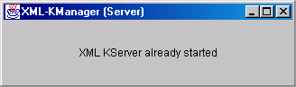
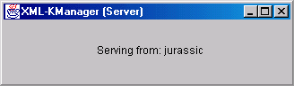
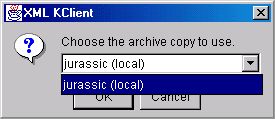
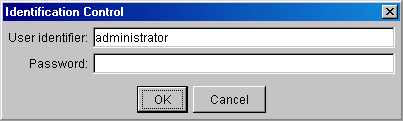
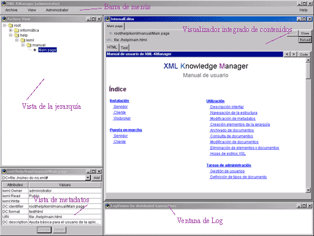
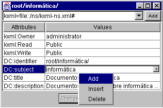
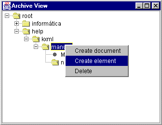

Requerimientos
previos
Para el funcionamiento de la aplicación es necesario tener instalado
el entorno de ejecución de Java para la plataforma Java 2, JRE1.2
o superior.
Versiones del JRE1.2.2 para Windows y Linux se incluyen en el CD de
la aplicación. Ir a la carpeta "java" del CD y seleccionar la versión
apropiada. Instalarla siguiendo las instrucciones correspondientes.
Para más información y últimas versiones visitar
java.sun.com.
Instalación
del servidor
Este proceso se completa simplemente copiando el contenido de la carpeta
"servidor" del CD a la localización del disco duro de la máquina
destino donde se quiera realizar la instalación. Por ejemplo, en
entorno Windows, "C:\XMLKMng".
Instalando el servidor se obtienen todos los servicios necesarios para
poner en marcha también el cliente. Por lo tanto nunca será
necesario instalar ambos en la misma máquina.
Instalación
del cliente
De igual forma que para el servidor el proceso instalación se
reduce a copiar el contenido de la carpeta "cliente" del CD a la localización
del disco duro de la máquina destino donde se quiera realizar la
instalación. Por ejemplo, como antes, "C:\XMLKMng". No existe ningún
problema en elegir la misma localización ya que no es necesario
instalar cliente y servidor en la misma máquina. Si sólo
se utilizarán los servicios de cliente de la aplicación bastará
con instalar el cliente.
Instalar
Visibroker
Esta implementación de CORBA ofrece muchas más posibilidades
que la básica que viene incluida con Java y es muy recomendable
su instalación si se quiere hacer uso de la aplicación en
un entorno distribuido.
Para llevar a cabo la instalación primero es necesario copiar
el contenido de la carpeta "corba" del CD de la aplicación al disco
duro de la máquina destino, concretamente en "XMLKHOME\corba", siendo
XMLKHOME la carpeta donde se instaló el servidor o cliente de la
aplicación. Para acabar la instalación será necesario
mover el archivo "orb.properties" a "JAVAHOME\jre\lib", siendo JAVAHOME
el path donde se ha instalado Java.
Con esto se configura Java para que utilice la implementación
de CORBA de Visibroker de forma automática. Si en cualquier momento
se quiere volver a la implementación por defecto de CORBA se debe
borrar este archivo o cambiar su contenido para que indique cual es la
implementación que se quiere utilizar.
Requerimientos
previos
Se necesita el soporte de CORBA para el funcionamiento de la aplicación,
incluso si se le va a dar un uso puramente local. En este caso se utilizará
la implementación CORBA suministrada con Java. Para ponerlo en marcha
simplemente hay que ejecutar "tnameserv" que se encuentra dentro del directorio
"JAVAHOME\bin".
Si la aplicación se va a usar en un entorno distribuido es recomendable
utilizar otra implementación más completa, por ejemplo Visibroker3.4
que se incluye en la carpeta "corba" del CD. Para instalarla seguir las
instrucciones de Instalar Visibroker. Se inicia
el soporte CORBA de Visibroker ejecutando "visibroker" desde la carpeta
donde se haya instalado Visibroker siguiendo el paso anterior.
Arrancar el
servidor
Para poner en marcha el servidor primario del sistema ir a XMLKHOME
y ejecutar "servidor".
Se inicia entonces el proceso de arrancado de la réplica principal
del archivo. No debe existir ningún otro servidor primario en marcha,
en este caso aparecerá la ventana siguiente informando de esta incidencia.

Si el servidor se pone en marcha satisfactoriamente la ventana del servidor aparece informando de que se encuentra funcionando y desde que máquina lo está haciendo. Cerrando esta ventana se puede detener el funcionamiento del servidor.

Cuando se produzca otra situación la ventana mostrará el mensaje de error correspondiente. Normalmente el problema será que no se ha puesto en marcha de forma correcta el soporte de CORBA, será necesario revisar este procedimiento tal y como se indica en los requerimientos previos.
Arrancar un
cliente
Para poner en marcha un cliente ir a la carpeta donde éste fue
instalado, XMLKHOME, y ejecutar "cliente".
El cliente, al arrancar, comprueba cuál es la disponibilidad
de réplicas del archivo en su entorno de ejecución, remoto
o no. Se muestra entonces una ventana donde el usuario puede seleccionar
la réplica con la que quiere trabaja, identificadas por el nombre
de la máquina que la soporta. Además en este listado se incluye
una entrada para la máquina local de forma que seleccionándola
se ponga en marcha una nueva réplica en ella. Solamente se permite
una réplica por máquina de forma que si ya existe una residiendo
en la máquina local no se tendrá esta opción y se
podrá operar sobre ella de igual forma que si se tratase de una
remota.

Una vez seleccionada la réplica del archivo sobre la que se trabajará
se iniciará un proceso de autenticación previo a la entrada
efectiva en el archivo. Si se seleccionó arrancar una nueva copia
del archivo realmente se producirán dos autenticaciones. La primera
adicional servirá para controlar el arrancado de nuevas réplicas
que únicamente podrán llevar a cabo los usuarios con derechos
de administrador.
NOTA: en la primera ejecución sólo
está definido el usuario "administrator" con contraseña vacía.
Se deberá utilizar éste para entrar e inmediatamente cambiar
su contraseña por una más apropiada.

Se tendrán tres intentos para satisfacer el control de acceso
y si se cumple se producirá realmente la entrada al sistema asumiendo
en rol del usuario del cual se ha hecho la autenticación. Aparecerá
la interfaz de usuario que le permitirá, a partir de ese momento,
interactuar con el sistema bajo las restricciones de seguridad correspondientes
al rol asumido.
Descripción
interfaz
En la siguiente figura se detallan los
elementos que componen la interfaz de usuario suministrada.

Cambio
de contraseña
Para mantener la seguridad del sistema
es importante cambiar la contraseña suministrada inicialmente por
una totalmente privada. Esto se consigue mediante la opción "Change
password" del menú "Archive" de la barra de menús.
Esto es especialmente importante para el usuario inicial "administrator"
que empieza con contraseña vacía.
Navegación
de la estructura
A través de la ventana de la vista
de la jerarquía se puede navegar a través de la estructura
del archivo. La jerarquía se muestra en forma de árbol con
diferentes niveles para cada tipo de elemento. Los elementos de la jerarquía
son nodos que se pueden expandir y contraer mostrando su contenido, otros
elementos de la jerarquía y/o documentos. Cada nodo del árbol
tiene como texto asociado el identificador del elemento de la jerarquía
o documento que representa.
El elemento o documento activo será
el nodo del árbol seleccionado en un momento dado. En la vista de
metadatos se muestran los metadatos asociados al elemento o documento que
representa ese nodo. Sobre él también se realizarán
por defecto todas las operaciones que tengan como objetivo un elemento
o documento.
Modificación
de metadatos
En la vista de metadatos se muestran los metadatos asociados al elemento
del árbol actualmente seleccionado como una tabla con dos columnas,
la primera muestra el nombre de la propiedad y la segunda el valor que
toma ésta para el elemento o documento activo.
Para añadir un nuevo atributo a los metadatos pulsar el botón
derecho del ratón sobre la tabla que muestra los metadatos.
Se muestra un menú flotante que permite borrar el atributo seleccionado
en ese momento o añadir uno nuevo de entre los disponibles en el
submenú "Add". La lista de este submenú corresponde con las
propiedades disponibles en el esquema o vocabulario seleccionado en la
lista desplegable de la parte superior de la vista de metadatos. Seleccionando
uno de los atributos del submenú éste se añade al
conjunto de metadatos.
Se pueden definir otros esquemas mediante el botón "Add" a la
derecha del listado de esquemas. Con ello se muestra una ventana donde
se puede definir el alias con el que se hará referencia al nuevo
esquema y la localización de su definición. A partir del
momento de la definición de un nuevo esquema, seleccionándolo
en la lista de esquemas, todas las propiedades que define estarán
disponibles para describir el elemento sobre el que se esté trabajando.
Para dar valor a una nueva propiedad o modificar el o los de una existente
será necesario editar la entrada correspondiente de la tabla. Esto
se hace pulsando el botón izquierdo sobre la fila correspondiente
de la segunda columna. Después de esto se muestra una lista desplegable
con los valores de esta propiedad. Pulsando el botón derecho sobre
la parte inferior de la lista aparece un menú flotante que permite
eliminar la entrada seleccionada en ese momento o insertar/añadir
nuevas. Cuando se haya acabado de editar los valores de un atributo los
cambios se harán efectivos pulsando la tecla ENTER.

Si una propiedad tiene más de un valor y no esta siendo editada los diferentes valores aparecen en la celda correspondiente separados por comas.
Creación
elementos de la jerarquía
Para crear un nuevo elemento de la jerarquía pulsar el botón
derecho del ratón sobre la vista de la jerarquía estando
seleccionado un elemento de la jerarquía. Del menú flotante
que aparecerá seleccionar "Create element". En la vista de metadatos
se muestra entonces una plantilla de metadatos parcialmente definida que
permite acabar de completar los metadatos del nuevo elemento. Estos metadatos
iniciales son simplemente una guía y se pueden modificar de forma
normal, sobretodo el valor de "DC:identifier".
Cuando se hayan definido los metadatos deseados se procederá
a la creación efectiva del nuevo elemento de la jerarquía
pulsando el botón "Create" de la parte inferior de la vista de metadatos.

Archivado
de documentos
Se pueden archivar nuevos elementos siguiendo el mismo procedimiento
que para crear un elemento, pero en este caso deberá estar seleccionada
un elemento de la jerarquía que corresponda a una carpeta. En esta
situación en el menú flotante aparece la opción "Create
document" que deberá seleccionarse. Como antes aparece la plantilla
de metadatos para el nuevo documento en la vista de metadatos. Para los
documentos será necesario rellenar las propiedades correspondientes
al la URL que apunta al contenido y la que indica el tipo de dicho contenido,
codificado como un identificador MIME.
Consulta
de documentos
Para acceder al contenido de un documento
se puede hacer doble clic sobre el nodo correspondiente en la vista de
la jerarquía o, teniéndolo seleccionado, elegir la opción
"View" del menú flotante que aparece al pulsar el botón derecho
del ratón.
Como resultado de esta acción se
lanzará la aplicación de edición que tenga asignada
el tipo de contenido correspondiente al documento. Si se trata de una componente
integrado aparecerá en la ventana del Editor Integrado como una
nueva pestaña. En otro caso se lanzará la aplicación
externa en una nueva ventana y simultáneamente aparecerá
una ventana de monitorización de contenidos que permitirá
disfrutar, también en este caso, de los mensajes informando de las
acciones que, por parte de otros usuario, vaya sufriendo dicho documento.
Eliminación
de elementos y documentos
En los dos casos se procede de igual forma, lo primero es seleccionar
el elemento o documento a eliminar. A continuación pulsar el botón
derecho del ratón y del menú flotante seleccionar "Delete".
Hojas
de estilo XSL
El componente integrado suministrado para la visualización de
contenidos XML ofrece la posibilidad de mostrar los documentos de este
tipo en forma HTML aplicando diferentes hojas de estilo XSL.
Estas se pueden asociar a una DTD, de cualquiera de los documentos
XML archivados, proporcionando la URL a su definición y un identificador.
A partir de ese momento se podrá aplicar a los documentos XML visualizados
que sigan esa DTD. Para realizar la asociación será necesario
recurrir al submenú "Associate XSL" dentro del menú "View".
Aparecerá una tabla con todas las DTDs registradas en el archivo
y sus XSLs asociadas. La edición de esta tabla se realiza de forma
similar a la de la vista de metadatos.
Mensajes
de Log
La ventana de Log muestra mensajes informativos
sobre todas las operaciones de modificación, no consultas, que se
van produciendo en el sistema de forma global, tanto las locales como las
procedentes de otros usuarios remotos.
Documentos
recientes
A través del menú "Archive"
de la barra de menús se tiene acceso en el submenú "Recent"
a un listado de los cinco documentos usados más recientemente. Seleccionando
la entrada correspondiente se tiene acceso directo a su contenido. Además
al arrancar el cliente se mostrará abierto el documento que fue
usado por última vez, el primero de este submenú. Para la
primera ejecución de un usuario se abre el cliente mostrando este
fichero de ayuda.
Entornos
de ventanas
Las ventanas de la aplicación pueden
adoptar diferentes "looks" para adaptarse a las preferencias del usuario
de forma que se integren en el entorno del sistema operativo donde se esté
operando. Las opciones disponibles aparecen en el menú "View". "Metal"
corresponde al look por defecto de Java, "Windows" se integra con dicho
sistema y "Motif/DCE" encaja en los entornos de ventanas de Unix.
Tareas
de administración
Las operaciones exclusivas del administrador aparecen en la barra de
menús dentro del menú "Administrator". Este aparece atenuado
e inutilizable si el usuario actual no es un administrador.
Gestión
de usuarios
Se pueden añadir y quitar usuarios con las opciones correspondientes
del menú "Administrator", "Create user" y "Delete user" respectivamente.
En el primer caso se solicitarán su identificador y contraseña
inicial. En el segundo se determinará el usuario a eliminar proporcionando
su identificador.
Definición
de tipos de documento
Mediante la opción "Document types" del menú "Administrator"
se accede a la ventana que permite editar o añadir nuevos tipos
de contenido al archivo. En el primer caso se selecciona la entrada correspondiente
y se puede cambiar la aplicación que dicho tipo tiene asignada.
Para añadir un nuevo tipo pulsar el botón "New type" de la
parte inferior y suministrar el identificador y la aplicación inicialmente
asignada en la ventana emergente.
NOTA: si se trata de una aplicación
externa ésta se especificará mediante el camino, path, el
ejecutable que la inicia. Si es un componente integrado este se especifica
mediante el nombre de la clase Java que le corresponde, que deberá
estar almacenada en el menú "plugins" dentro de la carpeta donde
está instalada la aplicación.